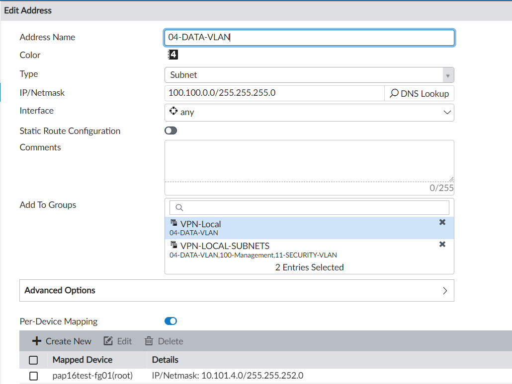

Fortinet Aantekeningen Vervallen
Inhoudsopgave
VPN met Sophos in DC
Voor onderstaande acties is het heel belangrijk om het juiste subnet te kiezen bij een VLAN.
Dus bijvoorbeeld voor DC-LAN is het netwerk 10.10.202.0/24. Als je 10.10.202.0/23 invult dan gaat de VPN tunnel niet werken.
Allereerst moet er een IP Sec tunnel tussen het management-VLAN van de Fortigate op locatie naar het LAN in het datacentre gemaakt worden zodat de Fortigate middels de FortiManager beheerd kan worden.
Dit betekent dus dat bij de VPN Tunnel de remote gateway moet zijn ingesteld, een preshared key ingevuld, voor de phase 1 het algoritme de DH-groep moet zijn gekozen.
Vervolgens moet de Phase 2 selector "100-management -> DC-LAN" zijn toegevoegd.
Aan de kant van het DC moet uiteraard ook de bijbehorende VPN gemaakt zijn met LOC_DC_Monta_Netw (10.10.202.0/24) en Loc_DC_DMZ-WEB_Netw (192.168.201.0/24).
Daarna kunnen er vanuit de Fortimanger Phase 2 selectors aan de VPN Tunnel toegevoegd worden.
De selectors kunnen alleen per stuk worden aangemaakt (dus VLAN naar VLAN) en niet met Address-groepen.
Deze dienen aangemaakt te worden in de Fortimanager onder "Device Settings \ device \ VPN \ Ipsec phase 2".
De details zijn dan:
“Auto Key Keep Alive” aanzetten is heel belangrijk, anders verbreekt de VPN na 43200 seconden (12 uur).\
LET OP bij het Named-Address moet dan wel de per-device-mapping ingevuld zijn als je die in de Phase 2 Selector gaat gebruiken !!
Via Install Wizard - Device Settings kun je ze dan deployen naar de Fortigate.
Via "View Installation Log" is te zien wat er wordt uitgevoerd.
Op de Fortigate gaat het er dan bijvoorbeeld als volgt uit zien :
Op de Sophos bewust geen "Automatic Firewall rules aanzetten.
Maak in de FortiManager onder Firewall Objects / Addresses voor alle locatie-VLAN's de adressen aan met een Per-Device mapping.

De groepen zijn eigenlijk niet zo belangrijk omdat het toch niet mogelijk bleek om bij phase 2 selectors groepen te gebruiken.
Als de phase2 - selectors zijn toegevoegd en de IP-sec-instellingen op de DC-ROU01 zijn goedgezet dan kunnen de
Er is een VPN_Sophos_DC2 aangemaakt die helemaal gelijk is aan bovenstaande met dit verschil dat deze op een andere interface is aangemaakt dan de glas-interface.
Als er DSL beschikbaar is gebruik dan DSL anders 4G.